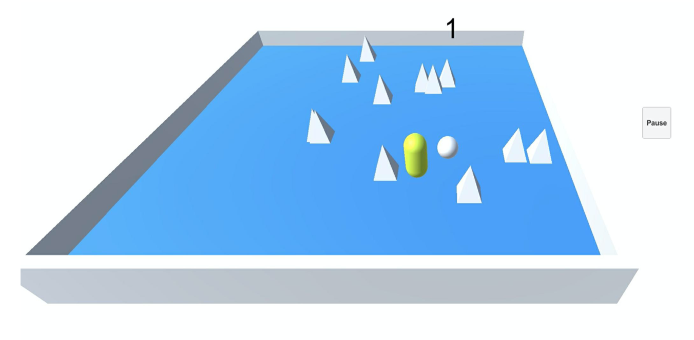
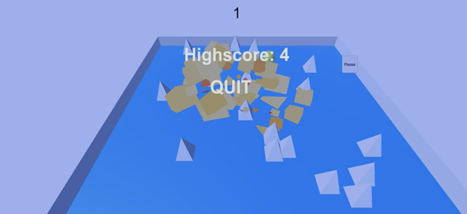

Throughout my career in college, I have been part of several projects and events which have allowed me to learn new things. Some of the events that I have participated in are:
Aggies Invent- A 48-hour challenge where you work in teams to create a solution to a given wordly problem. A problem that we were given was to find a way to keep food and medicine cool in a fridge in areas that have wide power outages. For this we created a prototype for a portable battery back up power which automatically turns on when the fridge's power goes out. Also when the power comes back on the battery will get charged as well.
Howdy Hack- This is a 24-hour challenge where a team codes to create a new product or invention which is then judges by a panel to receive prizes as well as recognition. My team created a prototype of an application that assists students to reserve their class as well as alert them of any classes that have opened up space which are on their watchlist. This application was a rough prototype and I would wish to keep working on it with my team to see this in reality.
Research- I have been working on a project to create an ankle robotic prosthesis to help those who can't walk. This requires force sensors and linear actuators combined with a raspberry pi as well as other parts to allow the motor to extend and retract ones ankle during the right time of the walking motion.
Gaming Application- As one of my first front end and back end experience, I had created a gaming application and published it to the Apple App Store for iOS devices. This application strengthened the motor skills for anyone playing. The gist of the game is to rotate your phone to move a ball around in the direction you want the ball to move. The ball has to avoid spikes that randomly pop up on the floor. To gain points, you have to collect coins by rolling the ball through it which allows you to build on your high score.
 